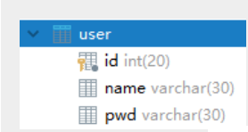
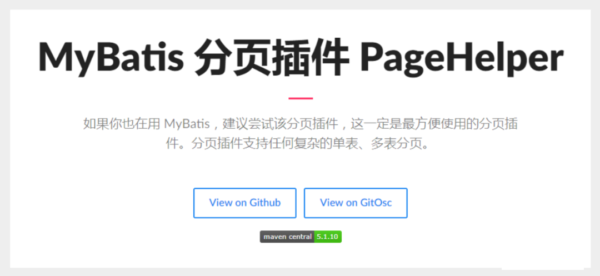

ResultMap
查询为null问题
要解决的问题：属性名和字段名不一致
查看之前的数据库的字段

java中的实体类设计
public class User { private int id; //id private String name; //姓名 private String password; //密码和数据库不一样！ //构造 //set/get //toString() }接口
//根据id查询用户 User selectUserById(int id);mapper映射文件
<select id="selectUserById" resultType="user"> select * from user where id = #{id} </select>测试
@Test public void testSelectUserById() { SqlSession session = MybatisUtils.getSession(); //获取SqlSession连接 UserMapper mapper = session.getMapper(UserMapper.class); User user = mapper.selectUserById(1); System.out.println(user); session.close(); }结果：
- User{id=1, name=’lg’, password=’null’}
- 查询出来发现 password 为空 . 说明出现了问题！
分析：
select * from user where id = #{id} 可以看做
select id,name,pwd from user where id = #{id}
mybatis会根据这些查询的列名(会将列名转化为小写,数据库不区分大小写) , 去对应的实体类中查找相应列名的set方法设值 , 由于找不到setPwd() , 所以password返回null ; 【自动映射】
解决方案
方案一：为列名指定别名 , 别名和java实体类的属性名一致 .
<select id="selectUserById" resultType="User">
select id , name , pwd as password from user where id = #{id}
</select>
方案二：使用结果集映射->ResultMap 【推荐】
<resultMap id="UserMap" type="User">
<!-- id为主键 -->
<id column="id" property="id"/>
<!-- column是数据库表的列名 , property是对应实体类的属性名 -->
<result column="name" property="name"/>
<result column="pwd" property="password"/>
</resultMap>
<select id="selectUserById" resultMap="UserMap">
select id , name , pwd from user where id = #{id}
</select>
ResultMap
自动映射
resultMap元素是 MyBatis 中最重要最强大的元素。它可以让你从 90% 的 JDBCResultSets数据提取代码中解放出来。- 实际上，在为一些比如连接的复杂语句编写映射代码的时候，一份
resultMap能够代替实现同等功能的长达数千行的代码。 - ResultMap 的设计思想是，对于简单的语句根本不需要配置显式的结果映射，而对于复杂一点的语句只需要描述它们的关系就行了。
你已经见过简单映射语句的示例了，但并没有显式指定 resultMap。比如：
<select id="selectUserById" resultType="map">
select id , name , pwd
from user
where id = #{id}
</select>
上述语句只是简单地将所有的列映射到 HashMap 的键上，这由 resultType 属性指定。虽然在大部分情况下都够用，但是 HashMap 不是一个很好的模型。你的程序更可能会使用 JavaBean 或 POJO（Plain Old Java Objects，普通老式 Java 对象）作为模型。
ResultMap 最优秀的地方在于，虽然你已经对它相当了解了，但是根本就不需要显式地用到他们。
手动映射
1、返回值类型为resultMap
<select id="selectUserById" resultMap="UserMap">
select id , name , pwd from user where id = #{id}
</select>
2、编写resultMap，实现手动映射！
<resultMap id="UserMap" type="User">
<!-- id为主键 -->
<id column="id" property="id"/>
<!-- column是数据库表的列名 , property是对应实体类的属性名 -->
<result column="name" property="name"/>
<result column="pwd" property="password"/>
</resultMap>
数据库中，存在一对多，多对一的情况，我们之后会使用到一些高级的结果集映射，association，collection这些，我们将在之后讲解，今天你们需要把这些知识都消化掉才是最重要的！理解结果集映射的这个概念！
分页的几种方式
日志工厂
思考：我们在测试SQL的时候，要是能够在控制台输出 SQL 的话，是不是就能够有更快的排错效率？
如果一个 数据库相关的操作出现了问题，我们可以根据输出的SQL语句快速排查问题。
对于以往的开发过程，我们会经常使用到debug模式来调节，跟踪我们的代码执行过程。但是现在使用Mybatis是基于接口，配置文件的源代码执行过程。因此，我们必须选择日志工具来作为我们开发，调节程序的工具。
Mybatis内置的日志工厂提供日志功能，具体的日志实现有以下几种工具：
- SLF4J
- Apache Commons Logging
- Log4j 2
- Log4j
- JDK logging
具体选择哪个日志实现工具由MyBatis的内置日志工厂确定。它会使用最先找到的（按上文列举的顺序查找）。如果一个都未找到，日志功能就会被禁用。
标准日志实现
指定 MyBatis 应该使用哪个日志记录实现。如果此设置不存在，则会自动发现日志记录实现。
<settings>
<setting name="logImpl" value="STDOUT_LOGGING"/>
</settings>
测试，可以看到控制台有大量的输出！我们可以通过这些输出来判断程序到底哪里出了Bug
Log4j
简介：
- Log4j是Apache的一个开源项目
- 通过使用Log4j，我们可以控制日志信息输送的目的地：控制台，文本，GUI组件….
- 我们也可以控制每一条日志的输出格式；
- 通过定义每一条日志信息的级别，我们能够更加细致地控制日志的生成过程。最令人感兴趣的就是，这些可以通过一个配置文件来灵活地进行配置，而不需要修改应用的代码。
使用步骤：
1、导入log4j的包
<dependency>
<groupId>log4j</groupId>
<artifactId>log4j</artifactId>
<version>1.2.17</version>
</dependency>
2、配置文件编写
#将等级为DEBUG的日志信息输出到console和file这两个目的地，console和file的定义在下面的代码
log4j.rootLogger=DEBUG,console,file
#控制台输出的相关设置
log4j.appender.console = org.apache.log4j.ConsoleAppender
log4j.appender.console.Target = System.out
log4j.appender.console.Threshold=DEBUG
log4j.appender.console.layout = org.apache.log4j.PatternLayout
log4j.appender.console.layout.ConversionPattern=[%c]-%m%n
#文件输出的相关设置
log4j.appender.file = org.apache.log4j.RollingFileAppender
log4j.appender.file.File=./log/kuang.log
log4j.appender.file.MaxFileSize=10mb
log4j.appender.file.Threshold=DEBUG
log4j.appender.file.layout=org.apache.log4j.PatternLayout
log4j.appender.file.layout.ConversionPattern=[%p][%d{yy-MM-dd}][%c]%m%n
#日志输出级别
log4j.logger.org.mybatis=DEBUG
log4j.logger.java.sql=DEBUG
log4j.logger.java.sql.Statement=DEBUG
log4j.logger.java.sql.ResultSet=DEBUG
log4j.logger.java.sql.PreparedStatement=DEBUG
3、setting设置日志实现
<settings>
<setting name="logImpl" value="LOG4J"/>
</settings>
4、在程序中使用Log4j进行输出！
//注意导包：org.apache.log4j.Logger
static Logger logger = Logger.getLogger(MyTest.class);
@Test
public void selectUser() {
logger.info("info：进入selectUser方法");
logger.debug("debug：进入selectUser方法");
logger.error("error: 进入selectUser方法");
SqlSession session = MybatisUtils.getSession();
UserMapper mapper = session.getMapper(UserMapper.class);
List<User> users = mapper.selectUser();
for (User user: users){
System.out.println(user);
}
session.close();
}
5、测试，看控制台输出！
- 使用Log4j 输出日志
- 可以看到还生成了一个日志的文件 【需要修改file的日志级别】
limit实现分页
思考：为什么需要分页？
在学习mybatis等持久层框架的时候，会经常对数据进行增删改查操作，使用最多的是对数据库进行查询操作，如果查询大量数据的时候，我们往往使用分页进行查询，也就是每次处理小部分数据，这样对数据库压力就在可控范围内。
使用Limit实现分页
#语法
SELECT * FROM table LIMIT stratIndex，pageSize
SELECT * FROM table LIMIT 5,10; // 检索记录行 6-15
#为了检索从某一个偏移量到记录集的结束所有的记录行，可以指定第二个参数为 -1：
SELECT * FROM table LIMIT 95,-1; // 检索记录行 96-last.
#如果只给定一个参数，它表示返回最大的记录行数目：
SELECT * FROM table LIMIT 5; //检索前 5 个记录行
#换句话说，LIMIT n 等价于 LIMIT 0,n。
步骤：
1、修改Mapper文件
<select id="selectUser" parameterType="map" resultType="user">
select * from user limit #{startIndex},#{pageSize}
</select>
2、Mapper接口，参数为map
//选择全部用户实现分页
List<User> selectUser(Map<String,Integer> map);
3、在测试类中传入参数测试
- 推断：起始位置 = （当前页面 - 1 ） * 页面大小
//分页查询 , 两个参数startIndex , pageSize
@Test
public void testSelectUser() {
SqlSession session = MybatisUtils.getSession();
UserMapper mapper = session.getMapper(UserMapper.class);
int currentPage = 1; //第几页
int pageSize = 2; //每页显示几个
Map<String,Integer> map = new HashMap<String,Integer>();
map.put("startIndex",(currentPage-1)*pageSize);
map.put("pageSize",pageSize);
List<User> users = mapper.selectUser(map);
for (User user: users){
System.out.println(user);
}
session.close();
}
RowBounds分页
我们除了使用Limit在SQL层面实现分页，也可以使用RowBounds在Java代码层面实现分页，当然此种方式作为了解即可。我们来看下如何实现的！
步骤：
1、mapper接口
//选择全部用户RowBounds实现分页
List<User> getUserByRowBounds();
2、mapper文件
<select id="getUserByRowBounds" resultType="user">
select * from user
</select>
3、测试类
在这里，我们需要使用RowBounds类
@Test
public void testUserByRowBounds() {
SqlSession session = MybatisUtils.getSession();
int currentPage = 2; //第几页
int pageSize = 2; //每页显示几个
RowBounds rowBounds = new RowBounds((currentPage-1)*pageSize,pageSize);
//通过session.**方法进行传递rowBounds，[此种方式现在已经不推荐使用了]
List<User> users = session.selectList("com.kuang.mapper.UserMapper.getUserByRowBounds", null, rowBounds);
for (User user: users){
System.out.println(user);
}
session.close();
}
PageHelper

官方文档：
转载请注明来源，欢迎对文章中的引用来源进行考证，欢迎指出任何有错误或不够清晰的表达。可以在下面评论区评论，也可以邮件至 1589631311@qq.com